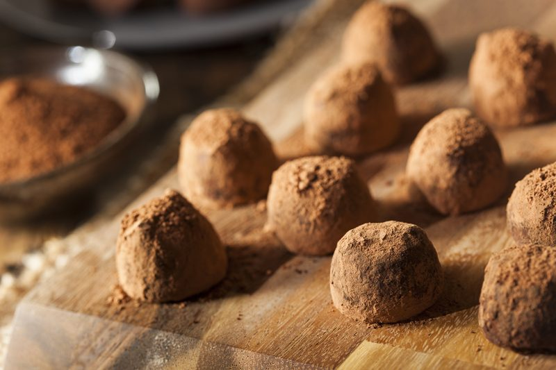

Gingerbread and Hazelnut Fudge Truffles
~ raw, vegan, gluten-free ~
The gingerbread spice in these little truffles comes from a gingerbread tea. I didn’t use the traditional array of spices, I literally cut open the tea bags, and dumped in the contents. And what a beautiful compliment it would be to serve these alongside a mug of hot gingerbread tea.

I decided to add chopped hazelnuts to these melt-in-mouth truffles to give a little textural pleasure. You could skip them all together making this recipe nut-free and you wouldn’t be sacrificing any pleasurable sensations. Perhaps do some with and some without.
They are soft and pillowy so don’t expect them to roll off the table and onto the floor should one get away from you. I accidentally dropped one and it landed with a sweet thud, spreading itself slightly on the floor with a small dust cloud of raw cacao powder. It’s as though I watched it happen in slow motion. Beautiful. hehe
While I was making these, I took an itty-bitty-teeny-weeny bite and I thought to myself… “Oh no! Now I’m in truffle! It’s almost as if the whole world kind of falls away as you take a bite.
Remember when I said that they melt in your mouth… when rolling these into little balls, I suggest making them bite-size. That way you can pop the whole thing in your mouth, seal your lips, close your eyes and just let this amazing pillow of chocolate melt, covering the whole inside of your mouth. Savor it. Don’t let this moment in life slip by too quickly. These are what memories are made from.
How do you like my “Well Done” toothpicks? I found them a while back at a restaurant store, along with ones that read “Gluten-Free.” The well-done ones are meant to poke into meat but I like to think of creative ways to use things and when I first saw them I thought, “Well done, Amie Sue, well done!” I dunno, I self-entertain quite well. :) They just make me smile and I hope it makes you smile as well.
 Ingredients:
Ingredients:
Makes roughly 32 truffles
Preparation:
- In a food processor, fitted with the “S” blade, combine the dates, coconut oil, cacao, flax, vanilla, tea bag contents, and salt. Process until everything is well incorporated.
- Remove the dough and place in a large bowl.
- Add the chopped hazelnuts and work the dough by hand.
- Run your hand under the faucet to dampen your hand to prevent the dough from sticking too bad.
- Then using the palm of your hand, make folding motions with the dough so the hazelnuts get evenly distributed.
- If the dough starts to stick to your hands, just dampen them again.
- Place the bowl in the freezer and let it sit for a least an hour. Even if left overnight, it won’t get hard. Blended dates never freeze solid.
- Using a 1 Tbsp cookie scoop, portion out the truffle balls, roll them in the palm of your hand, drop in cacao powder to coat, and roll them one more time. Repeat until all the dough is used up.
- I found that washing my hands several times throughout the process, helped with the sticking issue. Same with washing the scooper often as well.
- Store in the fridge for 2-3 weeks and in the freezer for up to 3 months.
- These freeze wonderfully. Due to the dates, they don’t freeze solid.
© AmieSue.com